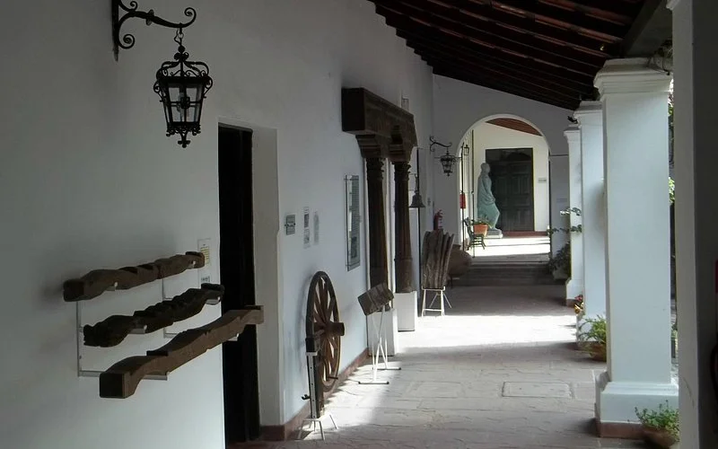
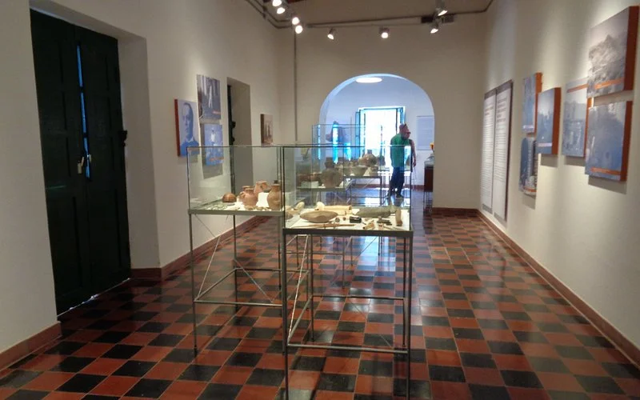
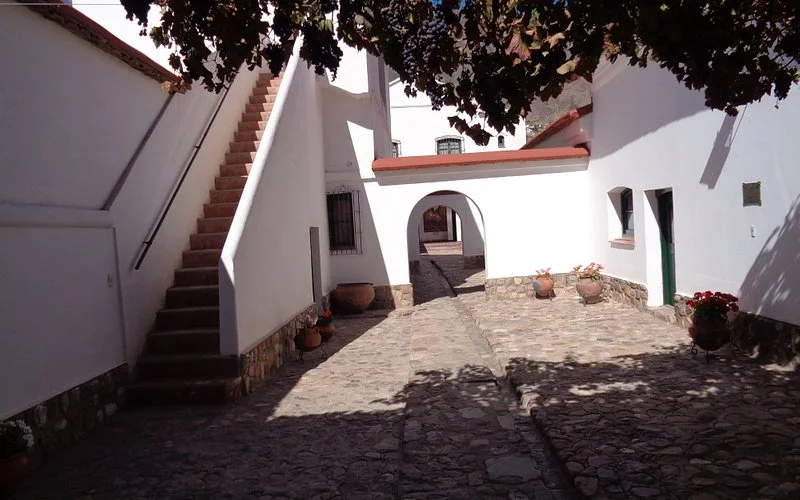
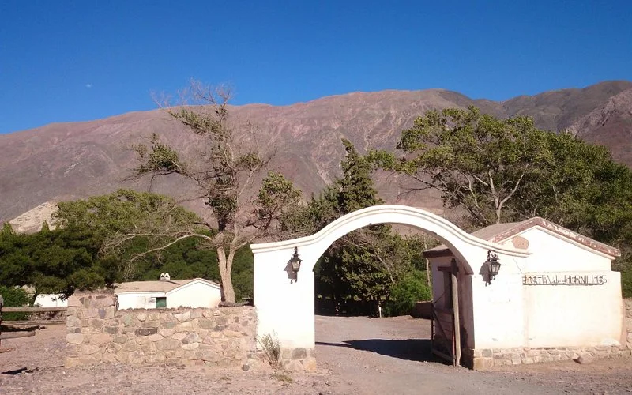

Se encuentra en San Salvador de Jujuy. Este museo funciona en una antigua casona colonial y alberga objetos históricos, documentos y mobiliario de la época.
Ubicado en Tilcara, muestra piezas arqueológicas de las culturas originarias de la región andina, incluyendo cerámicas, textiles y herramientas.
También en Tilcara, este museo está dedicado al arte. Exhibe obras del pintor José Antonio Terry y de artistas de la zona.
La Posta de Hornillos, ubicada entre Tilcara y Purmamarca, es un sitio histórico que te sumerge en el pasado. Conservada y bien cuidada, cuenta con una impresionante colección de elementos de época que te transportarán a momentos clave de la historia argentina.
